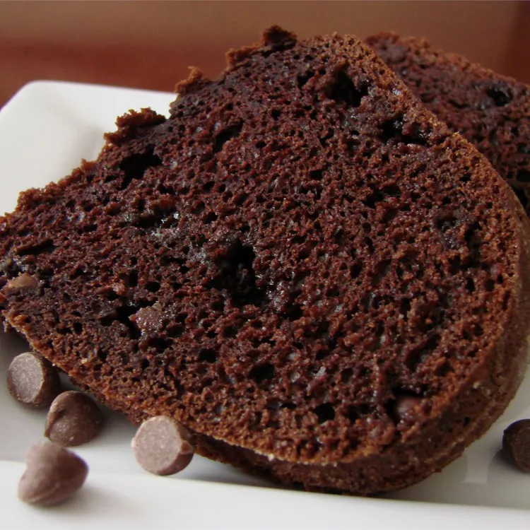

This chocolate brownie cake recipe is an easy Bundt cake made with cake mix, instant pudding, sour cream, and chocolate chips. Chocolate lovers beware: it is very yummy!
- 1 (18.25 ounce) package devil's food cake mix
- 1 (3.9 ounce) package instant chocolate pudding mix
- 4 eggs
- 1 cup sour cream
- ½ cup vegetable oil
- ½ cup water
- 2 cups semisweet chocolate chips
- Preheat the oven to 350 degrees F (175 degrees C). Grease and flour a 10-inch Bundt pan. Have all ingredients at room temperature.
- In a large bowl, stir together cake mix and pudding mix. Make a well in the center and pour in eggs, sour cream, oil, and water. Beat on low speed until blended. Scrape bowl, and beat 4 minutes on medium speed. Stir in chocolate chips. Pour batter into the prepared pan.
- Bake in the preheated oven for 50 to 60 minutes, or until a toothpick inserted into the center of the cake comes out clean. Allow to cool.